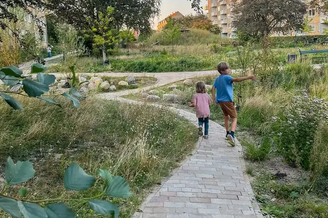

Naturbasert designstudio
Vi former steder for liv. Alt liv.
SLA er et internasjonalt anerkjent naturbasert designstudio. Vi jobber med byrom, landskap og klimatilpasning — med naturen som utgangspunkt, ikke som dekor.
Oslo · Hausmanns gate 6
København · Njalsgade 17B
Aarhus · Mejlgade 55B
Illustrasjon: enkle planter som veks opp. Dekorasjon, ikkje data.
Det vi jobber med
Fire felt der naturbasert design gjør en forskjell — fra byrom til klimatilpasning.
Plasser og byrom
Byrom som tåler bruk, vær og tid — og som gir plass til både folk og planter.
Landskap og natur
Steder der det lokale landskapet, artene og årstidene får styre formen.
Klimatilpasning
Løsninger for vann, varme og ekstremvær som bruker naturens egne mekanismer.
Strategi og plan
Rammer og prinsipper som gjør at naturbaserte løsninger holder gjennom hele prosjektet.


Naturen først, formen etterpå
Vi begynner med stedet: jorda, vannet, artene og menneskene som bruker det. Formen kommer som et svar på det — ikke omvendt.
- Les stedet: jord, vann, vind, arter
- Velg løsninger naturen kan vedlikeholde
- Test mot bruk, årstider og drift
- Følg opp at det holder over tid
«Vi former steder for liv. Alt liv.»
Har dere et sted som skal formes?
Ta kontakt, så ser vi på hvordan naturen kan bli en del av løsningen.